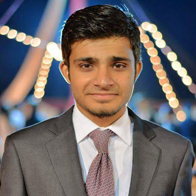

NCC
National Crisis Cell
The National Crisis Management Cell (NCMC) operates under the Ministry of Interior, and acts primarily as a domestic intelligence assessment and management institution. Its other activities involve building efforts towards counter-intelligence, counter-proliferation and counter-insurgency and it also assists the government at all levels of command in managing intelligence. Delegates will represent their respective personalities in an intense crisis situation that concerns the fate of the entire nation. The on-spot topic will ensure a level playing field, and with an agenda regarding issues of law and order or security though-out the nation, this committee guarantees the delegates 3 days of non-stop excitement and innovation.
Topic Area: The Karachi Issue(Research Guide)
